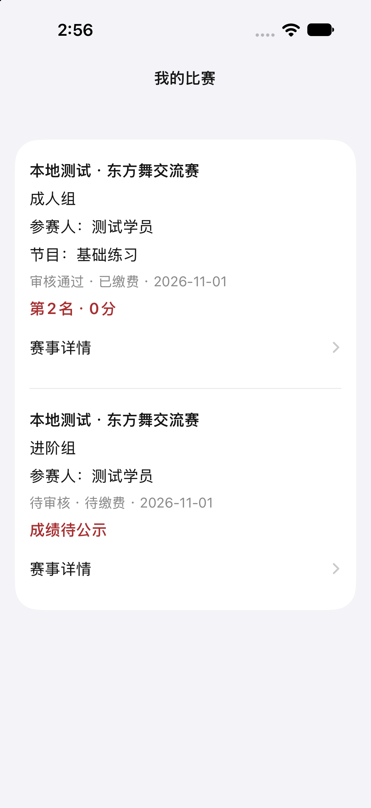
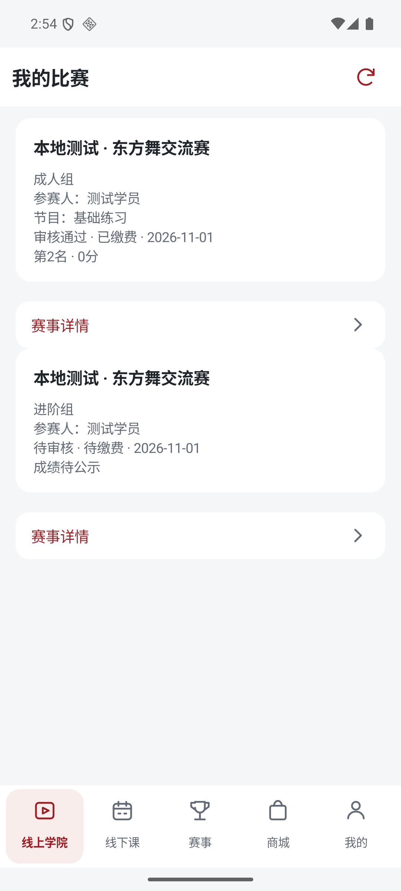

“我的比赛”已同步到三端 App 源码
个人中心、赛事页和 Android 报名成功后的记录入口统一进入“我的比赛”。记录来自受保护的 /member/events，集中展示本人的报名、组别、参赛人、节目、审核、缴费及已公示结果。记录本身不触发跳转，仅“赛事详情”进入该赛事。
- iOS：专用个人比赛页，支持加载、失败重试、无记录和下拉刷新；19 组契约检查与模拟器源码构建通过。
- Android：专用个人比赛列表，9 项单元测试通过，Debug / Release 构建通过，lint 0 错误、15 警告；签名候选包已验签。
- 鸿蒙：同步个人比赛入口与专用记录内容，使用 playerId 区分同场多个组别；缺少 DevEco Studio，未完成编译及设备验收。
- 三端严格以 resultPublished 为 true 才展示结果，保留已公示零分；未公示的分数、名次、奖项不展示。
以下是隔离样本的真实模拟器渲染，两个组别属于同一测试赛事：成人组已公示 0 分，进阶组的内部 99 分未公示，因此只显示“成绩待公示”。测试身份与直接进入页面的参数只在临时构建副本注入，没有进入产品源码或候选安装包。截图验证内容渲染，不等于生产登录或完整业务验收。
iOS · 隔离样本
Android · 隔离样本
下载 Android 签名候选包 · 验证记录 · 源码差异
原生端现有支付能力保持原状，本轮没有新增缴费能力。没有使用生产账号发起报名、支付、下单或核销。状态为开发源码与本地验证，未提审、未正式发布。